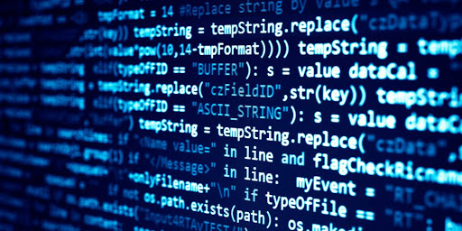

PROGRAMISTA
EDC podaje, że na świecie są już 23 miliony miejsc pracy dla inżynierów oprogramowania. Prawdopodobnie do 2023 roku liczba ta wzrośnie do niemal 28 milionów. Według US Bureau of Labor Statistics, między 2016 a 2026, liczba stanowisk dla programistów zwiększy się o aż 26%. Te statystki dowodzą, że w najbliższej przyszłości nie zabraknie pracy dla informatyków, dlatego z pewnością jest to kierunek, w którym warto się kształcić.
Programiści zajmują się wyszukiwaniem i naprawianiem błędów oraz pisaniem programów komputerowych, posługując się konkretnym językiem programowania (takim jak Java, Python, czy C++). Zazwyczaj specjalizują się w jednym z nich. Praca programistów to podstawa – bez nich nie powstałby żaden program, system operacyjny, ani narzędzie komputerowe.
W zależności od tego, którą „warstwą” aplikacji zajmują się programiści, dzielimy ich na:

- frontendowców,
- backendowców,
- full stack developerów.